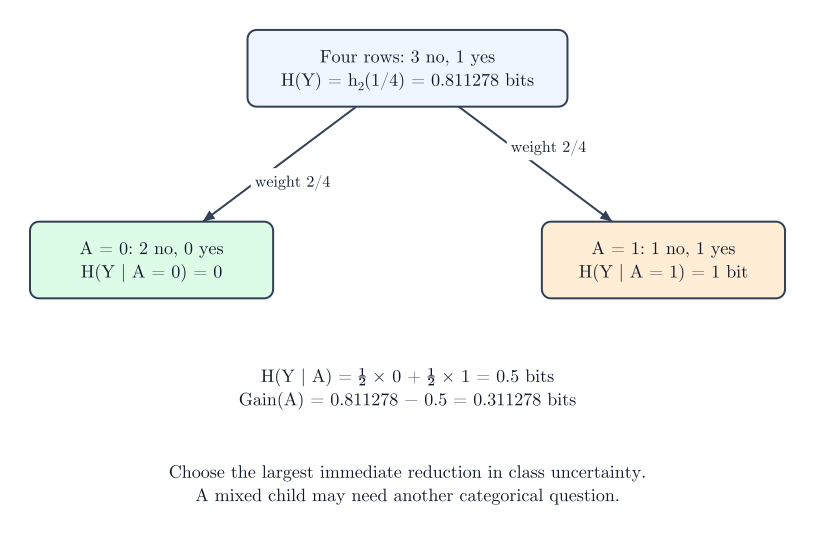
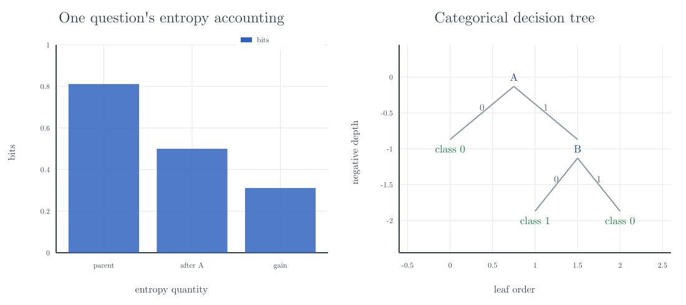
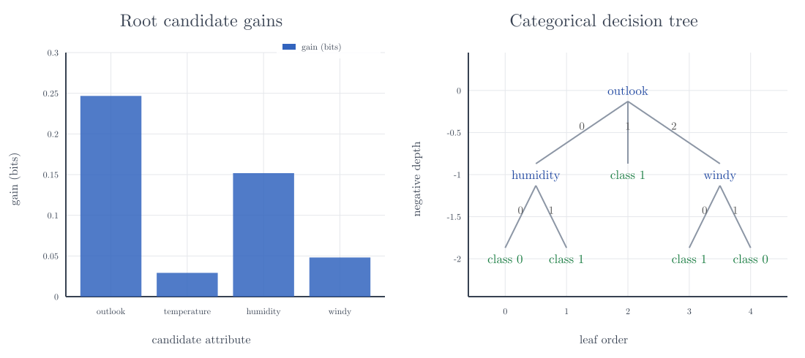
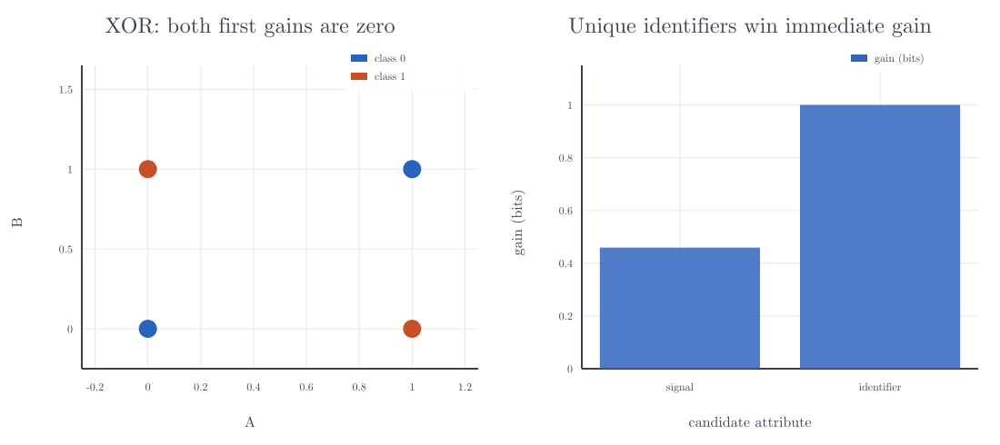
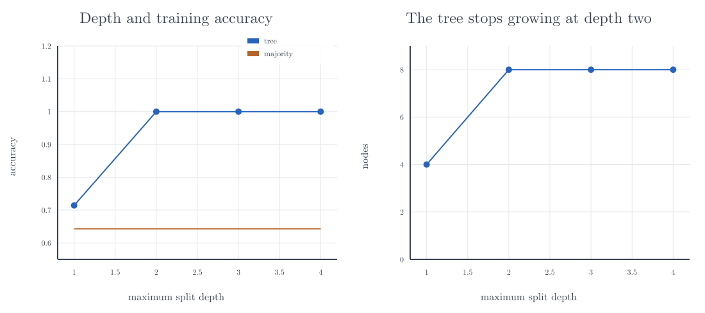
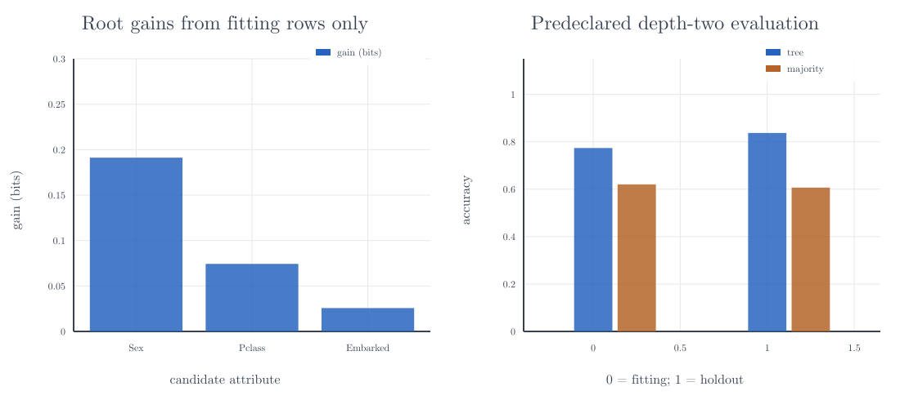

ID3: Categorical Questions and Information Gain
Abstract
A classifier must turn a row of categorical attributes into a class while choosing which questions to ask and when to stop. Many different trees fit the same rows, and a perfect fit can come from memorising identifiers. ID3 grows a multiway tree by maximising the immediate reduction in empirical class entropy. A four-row calculation and the fourteen-row Play Tennis fixture expose every split. XOR and unique identifiers show two different failures of this implementation's positive-gain rule. A fixed Titanic holdout illustrates training-only category dictionaries, local-majority fallback and the difference between training fit and prediction.
The method
From class frequencies to a categorical question
Let \(S\) contain \(n\) labelled rows and let \(p_c=n_c/n\). A question about attribute \(A\) partitions rows into \(S_v=\{i:x_{iA}=v\}\). Integer codes stand for categories: their numerical distances and order have no meaning. ID3 creates one branch per observed value, rather than a binary threshold. Define
Pure nodes have zero entropy. Concavity of entropy gives \(H(\sum_v w_vp_{c\mid v})\ge\sum_vw_vH(p_{c\mid v})\), hence \(0\le G\le H(S)\) in exact arithmetic. Equivalently the gain is the empirical mutual information between the class and that attribute. A useful question reduces expected uncertainty; the algorithm compares this immediate reduction at the current node, without searching all future trees.
The concept diagram below is drawn by dm::graphics::Diagram. Its editable C++
source is the complete block below; regeneration uses the same datamunge
toolchain as the numerical examples. Exports consume the saved local SVG.
#include <dm/dm.hpp>
int main() {
std::filesystem::create_directories("build");
dm::graphics::Diagram diagram;
dm::graphics::DiagramNodeStyle blue;
auto orange = blue;
orange.fill = {255, 237, 213};
auto green = blue;
green.fill = {220, 252, 231};
auto wide = blue;
wide.width = 5;
diagram.node("root", {0, 0},
"Four rows: 3 no, 1 yes\nH(Y) = h₂(1/4) = 0.811278 bits", wide).node("left", {-4, -3}, "A = 0: 2 no, 0 yes\nH(Y | A = 0) = 0", green).node("right", {4, -3}, "A = 1: 1 no, 1 yes\nH(Y | A = 1) = 1 bit", orange).edge("root", "left", "weight 2/4").edge("root", "right", "weight 2/4").text({0, -5}, "H(Y | A) = ½ × 0 + ½ × 1 = 0.5 bits\nGain(A) = 0.811278 − 0.5 = 0.311278 bits").text({0, -6.5}, "Choose the largest immediate reduction in class uncertainty.\nA mixed child may need another categorical question.");
diagram.save_svg("build/id3_information_gain.svg");
}
State the actual stopping and prediction rules
At a mixed node, id3_train tests each unused attribute and chooses the first
strict maximum in feature-index order. It stores the node's majority label, then
recurses over observed values only if the best computed gain is positive and at
least two branches exist. It stops at purity, exhausted attributes, the depth
cap, or a nonpositive best gain. This positive-gain restriction is an
implementation choice; it is stronger than permitting arbitrary zero-gain ID3
splits. Computed gain ties choose the lowest feature index. Majority ties choose
the smallest integer label. There is no floating-point gain tolerance.
Root depth is zero. max_depth=1 permits one question, 2 permits two, and the
special value 0 means unlimited depth. A path uses each attribute at most
once, so its split depth is at most the number of attributes. Contradictory
labels on identical feature rows remain unresolved. No pruning or missing-value
inference is performed. Aligned empty training inputs yield an empty tree;
prediction on it is rejected. Zero-column nonempty inputs yield a majority leaf.
Ragged or misaligned training arrays are rejected.
Prediction follows category edges until a leaf. For a value unseen at the
current node, it immediately returns that node's stored majority; it does not
search a similar branch. A level can exist elsewhere in the training data and
still be absent at that particular node. id3_trace shows exactly where
traversal stops.
What a split can and cannot guarantee
For a tree whose internal nodes are \(\mathcal I\), empirical gains telescope:
Every positive-gain split lowers weighted leaf entropy. Replacing a majority leaf by majority-labelled children also cannot increase training mistakes: each child could keep the parent's label, and its own majority does at least as well. Thus allowing deeper prefixes of the same deterministic tree cannot reduce training accuracy. Neither fact guarantees smaller test error, a globally smallest tree, or even the possibility of reaching a useful split after a zero-gain first question.
At a node, this ordered-map implementation partitions each candidate attribute and counts classes. A conservative upper bound is \(O(ndh\log n)\) work over a tree of split depth \(h\le d\), rather than a threshold-search CART complexity. Every leaf contains at least one fitting row, giving at most \(n\) leaves and \(2n-1\) nodes when all internal nodes have at least two children. Stored recursive row partitions can occupy \(O(nh)\) space, besides the output tree and attribute bookkeeping. Prediction costs \(O(h\log b)\) for at most \(b\) category branches per visited node.
Small examples
Four rows: calculate both gains and finish the tree
Take rows \((A,B)=(0,0),(0,1),(1,0),(1,1)\) with labels \((0,0,1,0)\), where zero means no and one means yes. Then \(H(S)=h_2(1/4)=0.8112781245\) bits. Either first question leaves one pure pair and one balanced pair, so both gains equal \(0.8112781245-1/2\). The lower-index attribute \(A\) wins. Its \(A=1\) child needs \(B\) to separate its two labels, while its \(A=0\) child is already pure. The resulting five-node tree fits all four rows.
#include <dm/dm.hpp>
int main() {
namespace a = dm::algorithms;
const std::vector<std::vector<int>> x{{0, 0}, {0, 1}, {1, 0}, {1, 1}};
const std::vector<int> y{0, 0, 1, 0};
const auto splits = a::id3_split_table(x, y, {"A", "B"});
const auto tree = a::id3_train(x, y);
auto entropy =
dm::graphics::RPlot::barplot({splits.double_at("entropy", 0),
splits.double_at("conditional_entropy", 0),
splits.double_at("gain", 0)},
{"parent", "after A", "gain"}, "bits",
{50, 100, 190}).title(
"One question's entropy accounting").x_label("entropy quantity").y_label("bits").y_limits(0, 1);
dm::graphics::RLayout::create(1, 2).add(entropy).add(
a::plot_id3_tree(tree, {"A", "B"})).size(1100, 490).fit_panels().save_svg("build/id3_four_rows.svg");
std::print("Candidate questions\n\n{}\n\nBranches of A\n\n{}\n\nTraining evaluation\n\n{}\n",
splits.to_md(), a::id3_branch_table(x, y, 0).to_md(),
a::id3_evaluate(tree, x, y).to_md());
}Candidate questions
| feature | name | branches | entropy | conditional_entropy | gain |
|---|---|---|---|---|---|
| 0 | A | 2 | 0.811 | 0.5 | 0.311 |
| 1 | B | 2 | 0.811 | 0.5 | 0.311 |
Branches of A
| value | rows | weight | entropy | weighted_entropy | majority |
|---|---|---|---|---|---|
| 0 | 2 | 0.5 | 0 | 0.0 | 0 |
| 1 | 2 | 0.5 | 1 | 0.5 | 0 |
Training evaluation
| rows | correct | accuracy | fallbacks | baseline_accuracy |
|---|---|---|---|---|
| 4 | 4 | 1 | 0 | 0.75 |

Play Tennis: a multiway root and different questions below it
id3_tennis() retains the original fourteen-row teaching fixture. It is
constructed categorical data, not a measured weather study. Outlook uses
sunny/overcast/rain codes 0/1/2; temperature hot/mild/cool uses 0/1/2; humidity
high/normal uses 0/1; windy false/true uses 0/1; the class play uses no/yes
codes 0/1.
There are nine yes and five no labels, so the root entropy is \(h_2(9/14)=0.9402859587\). Outlook's child class counts are sunny (2 yes,3 no), overcast (4 yes,0 no), and rain (3 yes,2 no). Therefore
This exceeds humidity's 0.151836, wind's 0.048127 and temperature's 0.029223 bits. Sunny rows next ask humidity; rain rows ask wind. Overcast rows stop immediately. The node table reports the majority fallback even on internal nodes, and uses feature -1 for leaves. A leaf's feature field is not a test.
#include <dm/dm.hpp>
int main() {
namespace a = dm::algorithms;
const auto d = a::id3_tennis();
const auto tree = a::id3_train(d.features, d.labels);
const auto s = a::id3_split_table(d.features, d.labels, d.feature_names);
auto gains =
dm::graphics::RPlot::barplot(s.numeric_column("gain").values(),
d.feature_names, "gain (bits)",
{50, 100, 190}).title(
"Root candidate gains").x_label("candidate attribute").y_label(
"gain (bits)").y_limits(0, .3);
dm::graphics::RLayout::create(1, 2).add(gains).add(a::plot_id3_tree(
tree, d.feature_names)).size(1100, 490).fit_panels().save_svg("build/id3_tennis.svg");
std::print("Root candidates\n\n{}\n\nOutlook branches\n\n{}\n\nTree nodes\n\n{}\n\nTraining fit\n\n{}\n",
s.to_md(), a::id3_branch_table(d.features, d.labels, 0).to_md(),
a::id3_node_table(tree).to_md(),
a::id3_evaluate(tree, d.features, d.labels).to_md());
}Root candidates
| feature | name | branches | entropy | conditional_entropy | gain |
|---|---|---|---|---|---|
| 0 | outlook | 3 | 0.940 | 0.694 | 0.247 |
| 1 | temperature | 3 | 0.940 | 0.911 | 0.029 |
| 2 | humidity | 2 | 0.940 | 0.788 | 0.152 |
| 3 | windy | 2 | 0.940 | 0.892 | 0.048 |
Outlook branches
| value | rows | weight | entropy | weighted_entropy | majority |
|---|---|---|---|---|---|
| 0 | 5 | 0.357 | 0.971 | 0.347 | 0 |
| 1 | 4 | 0.286 | 0.000 | 0.000 | 1 |
| 2 | 5 | 0.357 | 0.971 | 0.347 | 1 |
Tree nodes
| node | depth | leaf | feature | prediction | branches |
|---|---|---|---|---|---|
| 0 | 0 | 0 | 0 | 1 | 3 |
| 1 | 1 | 0 | 2 | 0 | 2 |
| 2 | 2 | 1 | -1 | 0 | 0 |
| 3 | 2 | 1 | -1 | 1 | 0 |
| 4 | 1 | 1 | -1 | 1 | 0 |
| 5 | 1 | 0 | 3 | 1 | 2 |
| 6 | 2 | 1 | -1 | 1 | 0 |
| 7 | 2 | 1 | -1 | 0 | 0 |
Training fit
| rows | correct | accuracy | fallbacks | baseline_accuracy |
|---|---|---|---|---|
| 14 | 14 | 1 | 0 | 0.643 |

Checking the theory
XOR: uncertainty can require a zero-gain first question
For all four binary pairs with labels \(Y=A\mathbin{\mathrm{xor}}B\), the parent entropy is one bit. Conditioning on either attribute leaves a balanced pair on each branch, so both gains are zero. This implementation stops at a majority leaf, chooses class zero by its tie rule, and fits only two rows. Yet the two-question rule “ask A, then B” fits every row. This is a limitation of immediate positive-gain stopping, not an impossibility of representing XOR with a decision tree.
Identifiers: maximal gain can mean memorisation
For six rows let \(Y=(0,0,0,1,1,1)\), an imperfect signal \(A=(0,0,0,0,1,1)\), and unique row identifiers \(I=0,1,\ldots,5\). The signal has gain \(1-(4/6)h_2(1/4)=0.459148\) bits. Each identifier branch is pure, giving gain one bit. ID3 chooses the identifier and memorises all six rows. On new identifiers it returns the tied root majority, class zero, even when the signal suggests class one. No statistic here estimates a population error rate. The two new rows are a deliberately constructed probe.
#include <dm/dm.hpp>
int main() {
namespace a = dm::algorithms;
const std::vector<std::vector<int>> xor_x{{0, 0}, {0, 1}, {1, 0}, {1, 1}};
const std::vector<int> xor_y{0, 1, 1, 0};
const auto xor_tree = a::id3_train(xor_x, xor_y);
const std::vector<std::vector<int>> id_x{{0, 0}, {0, 1}, {0, 2}, {0, 3},
{1, 4}, {1, 5}};
const std::vector<int> id_y{0, 0, 0, 1, 1, 1};
const auto id_tree = a::id3_train(id_x, id_y);
const auto gains = a::id3_split_table(id_x, id_y, {"signal", "identifier"});
auto xor_plot =
dm::graphics::RPlot::create().points({0, 1}, {0, 1}, "class 0",
{40, 100, 190}, 10).points(
{0, 1}, {1, 0}, "class 1", {200, 80, 40}, 10).title(
"XOR: both first gains are zero").x_label("A").y_label("B").x_limits(
-.25, 1.25).y_limits(-.25, 1.65).legend({"class 0", "class 1"},
{{40, 100, 190}, {200, 80, 40}});
auto id_plot =
dm::graphics::RPlot::barplot(gains.numeric_column("gain").values(),
{"signal", "identifier"}, "gain (bits)",
{50, 100, 190}).title(
"Unique identifiers win immediate gain").x_label("candidate attribute").y_label("gain (bits)").y_limits(0, 1.15);
dm::graphics::RLayout::create(1, 2).add(xor_plot).add(id_plot).size(1100,
490).fit_panels().save_svg("build/id3_greedy_limits.svg");
std::print("XOR root gains\n\n{}\n\nXOR training fit\n\n{}\n\nIdentifier root gains\n\n{}\n\nIdentifier " "training fit\n\n{}\n\nNew identifier probe\n\n{}\n",
a::id3_split_table(xor_x, xor_y, {"A", "B"}).to_md(),
a::id3_evaluate(xor_tree, xor_x, xor_y).to_md(), gains.to_md(),
a::id3_evaluate(id_tree, id_x, id_y).to_md(),
a::id3_evaluate(id_tree, {{0, 6}, {1, 7}}, {0, 1}).to_md());
}XOR root gains
| feature | name | branches | entropy | conditional_entropy | gain |
|---|---|---|---|---|---|
| 0 | A | 2 | 1 | 1 | 0 |
| 1 | B | 2 | 1 | 1 | 0 |
XOR training fit
| rows | correct | accuracy | fallbacks | baseline_accuracy |
|---|---|---|---|---|
| 4 | 2 | 0.5 | 0 | 0.5 |
Identifier root gains
| feature | name | branches | entropy | conditional_entropy | gain |
|---|---|---|---|---|---|
| 0 | signal | 2 | 1 | 0.541 | 0.459 |
| 1 | identifier | 6 | 1 | 0.000 | 1.000 |
Identifier training fit
| rows | correct | accuracy | fallbacks | baseline_accuracy |
|---|---|---|---|---|
| 6 | 6 | 1 | 0 | 0.5 |
New identifier probe
| rows | correct | accuracy | fallbacks | baseline_accuracy |
|---|---|---|---|---|
| 2 | 1 | 0.5 | 2 | 0.5 |

Depth caps preserve prefixes; unseen values use local majorities
The tennis root alone fits 10/14 rows; allowing a second question fits all fourteen. Further depth caps leave the same eight nodes. This checks the nondecreasing training accuracy argument on a finite fixture. It does not say that deeper trees improve prediction. The flat root-majority baseline would fit 9/14.
Now query sunny weather with humidity code 99. The root recognises sunny, then the humidity test has no matching edge and returns the sunny subset's majority, no. For outlook code 99 the root itself falls back to yes. Code 99 is an explicit novel category, not a missing-value model. The trace table includes the final unseen stop and each visited node's fallback label.
#include <dm/dm.hpp>
int main() {
namespace a = dm::algorithms;
const auto d = a::id3_tennis();
std::vector<double> depth, accuracy, nodes;
for (std::size_t cap = 1; cap <= 4; ++cap) {
const auto t = a::id3_train(d.features, d.labels, cap);
depth.push_back(cap);
accuracy.push_back(a::id3_evaluate(t, d.features, d.labels).double_at(
"accuracy", 0));
nodes.push_back(t.nodes.size());
}
dm::dstruct::DataFrame table;
table.add_column("max_depth", depth);
table.add_column("training_accuracy", accuracy);
table.add_column("nodes", nodes);
auto fit =
dm::graphics::RPlot::create().line(depth, accuracy, "tree",
{40, 100, 190}).points(
depth, accuracy, "", {40, 100, 190}, 5).line({1, 4}, {9. / 14, 9. / 14},
"majority", {180, 100, 40}).title("Depth and training accuracy").x_label("maximum split depth").y_label("accuracy").x_limits(.8, 4.2).y_limits(.55, 1.2).legend({"tree", "majority"}, {{40, 100, 190}, {180, 100, 40}});
auto size =
dm::graphics::RPlot::create().line(depth, nodes, "", {40, 100, 190}).points(depth, nodes, "", {40, 100, 190}, 5).title("The tree stops growing at depth two").x_label("maximum split depth").y_label("nodes").x_limits(.8, 4.2).y_limits(0, 9);
dm::graphics::RLayout::create(1, 2).add(fit).add(size).size(1100, 490).fit_panels().save_svg("build/id3_depth_and_fallback.svg");
const auto tree = a::id3_train(d.features, d.labels);
std::print("Depth profile\n\n{}\n\nSunny, unseen humidity\n\n{}\n\nUnseen outlook\n\n{}\n",
table.to_md(), a::id3_trace(tree, {0, 0, 99, 0}).to_md(),
a::id3_trace(tree, {99, 0, 0, 0}).to_md());
}Depth profile
| max_depth | training_accuracy | nodes |
|---|---|---|
| 1 | 0.714 | 4 |
| 2 | 1.000 | 8 |
| 3 | 1.000 | 8 |
| 4 | 1.000 | 8 |
Sunny, unseen humidity
| node | feature | value | prediction | leaf | unseen |
|---|---|---|---|---|---|
| 0 | 0 | 0 | 1 | 0 | 0 |
| 1 | 2 | 99 | 0 | 0 | 1 |
Unseen outlook
| node | feature | value | prediction | leaf | unseen |
|---|---|---|---|---|---|
| 0 | 0 | 99 | 1 | 0 | 1 |

Observed data: Titanic passenger survival
dm::datasets::titanic() supplies the bundled 891-row, 12-column Kaggle
training set. We select Sex, Pclass, Embarked and Survived, then remove the two
rows missing Embarked, retaining 889 rows. Missing Age and Cabin values are
irrelevant to these selected columns. Pclass is a three-level category here, not
a continuous measure. The response is Survived, coded zero or one. PassengerId,
names, tickets and cabins are excluded; the identifier example explains one
reason for excluding identifiers.
Before fitting, declare a deterministic split: positions divisible by five in the retained dataset, counting from zero, are the 178 holdout rows; the other 711 rows are fitting rows. This is a transparent demonstration split, without stratification, family grouping, repeated evaluation or population uncertainty estimates. It does not establish transport to another passenger population or separate related families.
Fix maximum depth two before looking at holdout results. The DataFrame wrapper learns its dictionaries on the fitting rows only. New levels encode as -1, which cannot collide with learned nonnegative codes, and follow the same local-majority rule. Predictor column names and types are checked at inference; column order may differ. Nulls and nonfinite values are rejected, rather than converted to classes or silently removed. Integer-valued labels are required. Numeric values remain categories even when their magnitudes suggest an ordering.
#include <dm/dm.hpp>
int main() {
namespace a = dm::algorithms;
const auto selected =
dm::datasets::titanic().select({"Sex", "Pclass", "Embarked", "Survived"});
const auto complete = selected.drop_nulls();
std::vector<std::size_t> fit_rows, test_rows;
for (std::size_t i = 0; i < complete.nrows(); ++i)
(i % 5 == 0 ? test_rows : fit_rows).push_back(i);
const auto fit =
complete.take_rows(fit_rows), test = complete.take_rows(test_rows);
const std::vector<std::string> predictors{"Sex", "Pclass", "Embarked"};
const a::ID3FrameClassifier model(fit, predictors, "Survived", 2);
const auto train_result =
model.evaluate(fit), test_result = model.evaluate(test);
const a::ID3FrameClassifier stump(fit, predictors, "Survived", 1);
const auto values = fit.numeric_column("Survived").values();
const std::vector<int> labels(values.begin(), values.end());
const auto gains =
a::id3_split_table(model.encode(fit), labels, predictors);
auto score =
dm::graphics::RPlot::create().bars({0, 1},
{train_result.double_at("accuracy", 0),
test_result.double_at("accuracy", 0)},
"tree", {40, 100, 190}, .22).bars(
{.25, 1.25},
{train_result.double_at("baseline_accuracy", 0),
test_result.double_at("baseline_accuracy", 0)}, "majority",
{180, 100, 40}, .22).title("Predeclared depth-two evaluation").x_label(
"0 = fitting; 1 = holdout").y_label("accuracy").x_limits(-.4, 1.65).y_limits(0, 1.15).legend({"tree", "majority"}, {{40, 100, 190}, {180, 100, 40}});
auto gain_plot =
dm::graphics::RPlot::barplot(gains.numeric_column("gain").values(),
predictors, "gain (bits)", {40, 100, 190}).title("Root gains from fitting rows only").x_label("candidate attribute").y_label("gain (bits)").y_limits(0, .3);
dm::graphics::RLayout::create(1, 2).add(gain_plot).add(score).size(1100, 490).fit_panels().save_svg("build/id3_titanic.svg");
std::print("Depth-one and depth-two holdout labels agree: {}.\n\n",
stump.predict(test) == model.predict(test));
std::print("Selected {} of 891 rows; omitted {} incomplete rows. Fitting {}, holdout {}.\n\nFitting-row " "root gains\n\n{}\n\nFitting evaluation\n\n{}\n\nHoldout evaluation\n\n{}\n\nFitted " "nodes\n\n{}\n",
complete.nrows(), selected.nrows() - complete.nrows(),
fit.nrows(), test.nrows(), gains.to_md(), train_result.to_md(),
test_result.to_md(), a::id3_node_table(model.tree()).to_md());
}Depth-one and depth-two holdout labels agree: true.
Selected 889 of 891 rows; omitted 2 incomplete rows. Fitting 711, holdout 178.
Fitting-row root gains
| feature | name | branches | entropy | conditional_entropy | gain |
|---|---|---|---|---|---|
| 0 | Sex | 2 | 0.958 | 0.767 | 0.191 |
| 1 | Pclass | 3 | 0.958 | 0.884 | 0.074 |
| 2 | Embarked | 3 | 0.958 | 0.932 | 0.026 |
Fitting evaluation
| rows | correct | accuracy | fallbacks | baseline_accuracy |
|---|---|---|---|---|
| 711 | 550 | 0.774 | 0 | 0.620 |
Holdout evaluation
| rows | correct | accuracy | fallbacks | baseline_accuracy |
|---|---|---|---|---|
| 178 | 149 | 0.837 | 0 | 0.607 |
Fitted nodes
| node | depth | leaf | feature | prediction | branches |
|---|---|---|---|---|---|
| 0 | 0 | 0 | 0 | 0 | 2 |
| 1 | 1 | 0 | 1 | 1 | 3 |
| 2 | 2 | 1 | -1 | 1 | 0 |
| 3 | 2 | 1 | -1 | 1 | 0 |
| 4 | 2 | 1 | -1 | 1 | 0 |
| 5 | 1 | 0 | 1 | 0 | 3 |
| 6 | 2 | 1 | -1 | 0 | 0 |
| 7 | 2 | 1 | -1 | 0 | 0 |
| 8 | 2 | 1 | -1 | 0 | 0 |

The fitted tree classifies 550/711 fitting passengers and 149/178 holdout passengers correctly; the fitted-majority baseline classifies 108/178 holdout passengers correctly. The root asks Sex and both children next ask Pclass, but every female leaf still predicts survival and every male leaf predicts non-survival. Consequently the extra question reduces class entropy without changing any hard prediction relative to the depth-one tree; the program checks equality on the holdout. The holdout accuracy is higher than the fitting accuracy in this particular split, illustrating sample variation rather than a guarantee about new passengers.
The root gain table and fitted node table expose what was learned. The reported fallback counts refer to missing branches, which need not be globally novel levels. Accuracy is unweighted by passenger, and the baseline class comes from the fitting root even when evaluating the holdout. Training and holdout performance quantify this one declared experiment; they are not causal effects of sex, class or embarkation and do not establish class-probability calibration. The model returns hard labels, not estimated survival probabilities.
Conclusion
The four-row calculation connects class counts, weighted child entropy and a complete tree. Play Tennis shows that a multiway root can ask different questions on different branches, while the depth experiment checks its deterministic prefixes. XOR exposes this variant's refusal to take a zero-gain first step; unique identifiers expose information gain's preference for training purity with many categories. An unseen branch has a precise, inspectable local-majority fallback.
The Titanic example applies those same rules through frozen training
dictionaries, with an explicitly fixed depth and holdout. ID3 remains a greedy
categorical tree without pruning, smoothing, missing-value inference or a
guarantee of generalisation. The neighbouring c45_train routine implements
continuous binary gain-ratio tests; it is a restricted C4.5-inspired variant,
not the full C4.5 system or a drop-in categorical ID3 alternative.
References
- J. R. Quinlan (1986), “Induction of decision trees”, Machine Learning 1, 81–106. [Publisher record](https://doi.org/10.1007/BF00116251), [original paper](https://storm.cis.fordham.edu/~gweiss/selected-papers/quinlan86.pdf). The report distinguishes the local implementation's positive-gain stopping rule.
- [Kaggle, Titanic — Machine Learning from
Disaster](https://www.kaggle.com/competitions/titanic/data). Bundled dataset
provenance and missingness are documented by
dm::datasets::titanic(); the Play Tennis data are a separate constructed teaching fixture.